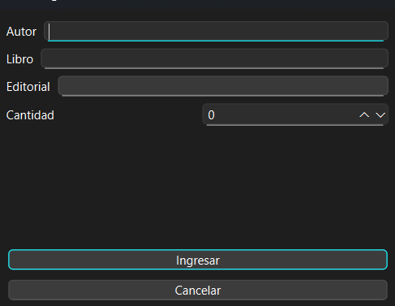

Control de Tiempo para Actividades
Usa el botón de abajo para iniciar y detener un temporizador que te ayude a medir el tiempo que dedicas a cada ejercicio.
00:00:00Ejercicio 1: Gestor de Libros
- Consigna: Registrar libros en una tabla con validación de campos.
-
Elementos de Qt a utilizar:
QLineEdit, QPushButton, QTableWidget, QSpinBox, QDialog, vector. - Puntos que debe cumplir:
- Modelar el objeto "Libros" con atributos como "autorLibro, nombreLibro, editorialLibro, cantidad" y sus respectivos metodos para ingresar o retornar estos datos
- Crear un formulario (QDialog) donde se ingresaran datos del libro "Autor, libro, Editorial, cantidad".
- Validar campos vacios.
- Tiene que poderse editar o eliminar un libro.
- Ocupar vector con tipo objeto (std::vector
libro) - Mostrar todo esto en un QTableWidget
- Tanto el boton agregar como editar deben abrir la ventanda de formulario (La de abajo)

Ejercicio 2: Contador Numérico
- Consigna: Contador entre 0 y 20 con botones deshabilitables.
-
Elementos de Qt a utilizar:
QPushButton, QLabel o QLCDNumber. - Puntos que debe cumplir:
- El programa debe iniciar en el numero 1
- Al presionar el boton "incremenar" debe sumarse 1 cada vez al contador, viceversa para el decrementar.
- Si se llega al 0 se debe deshabilitar el boton incremenar.
- Si se llega al 20 se debe deshabilitar el boton decrementar.